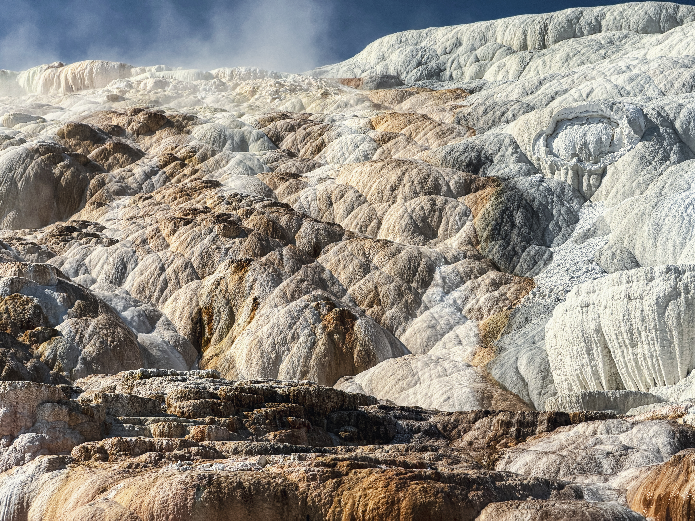
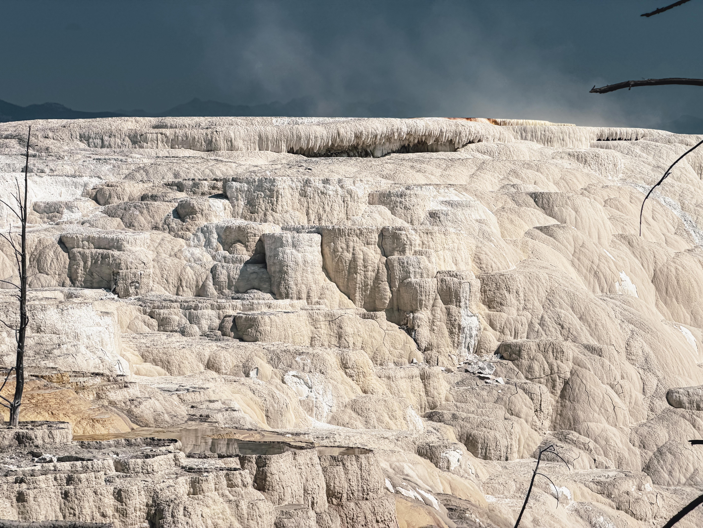
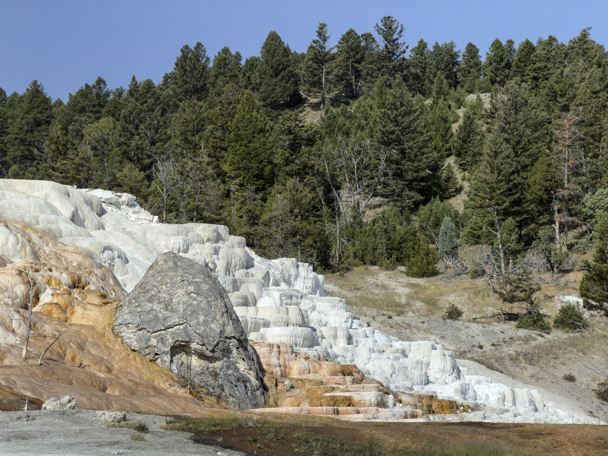
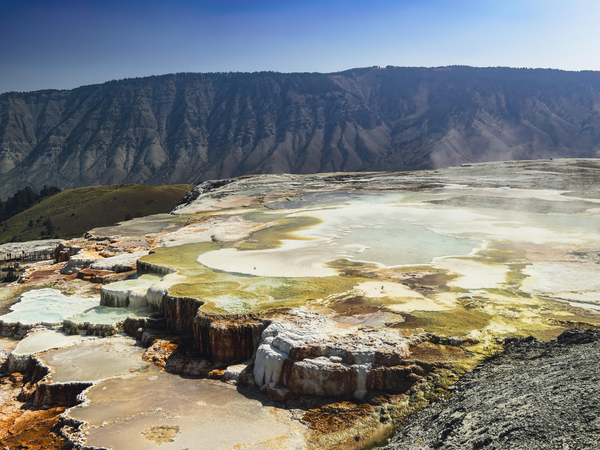
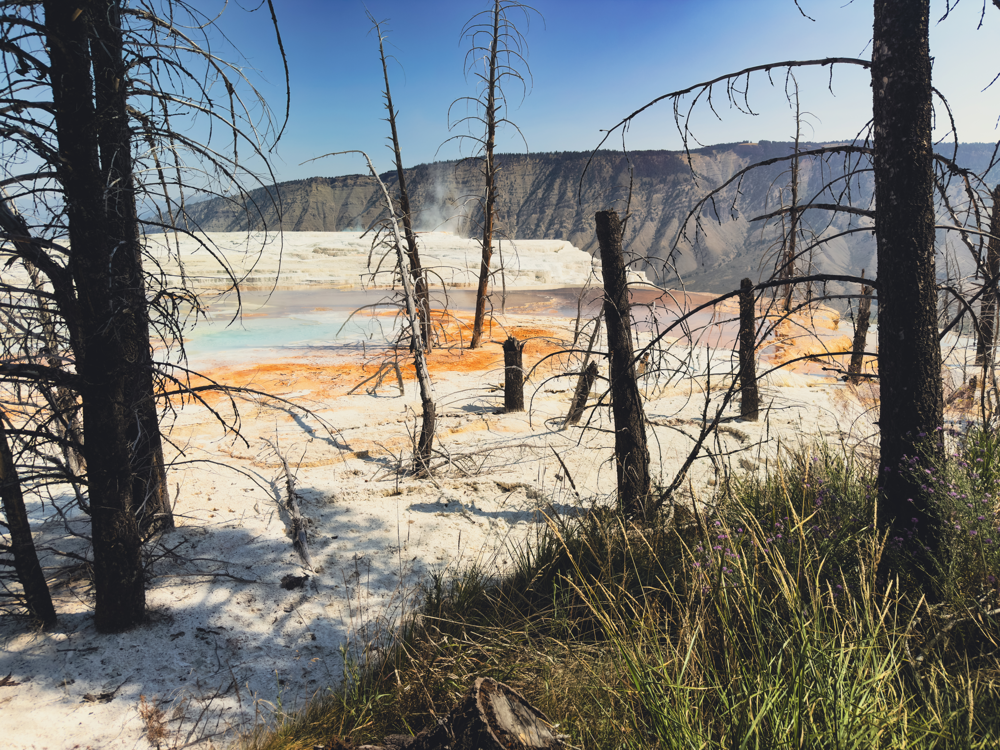
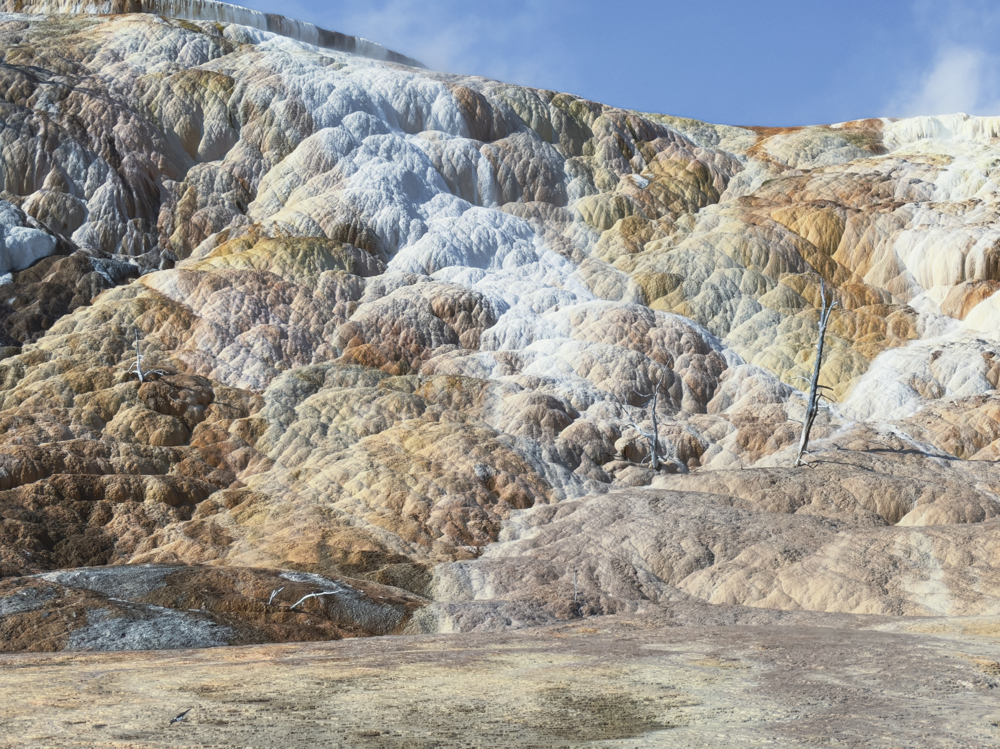
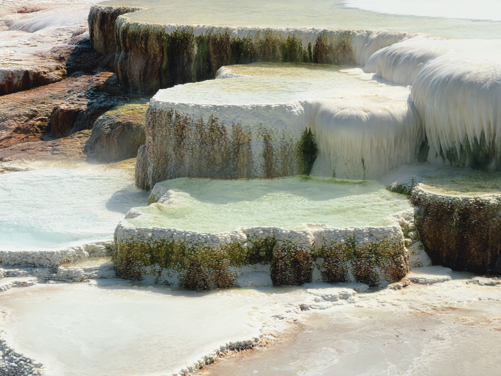
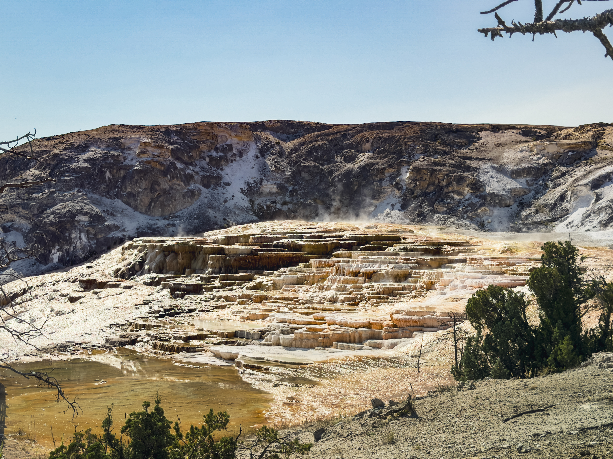
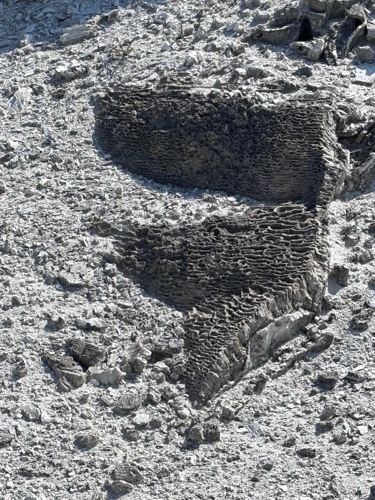
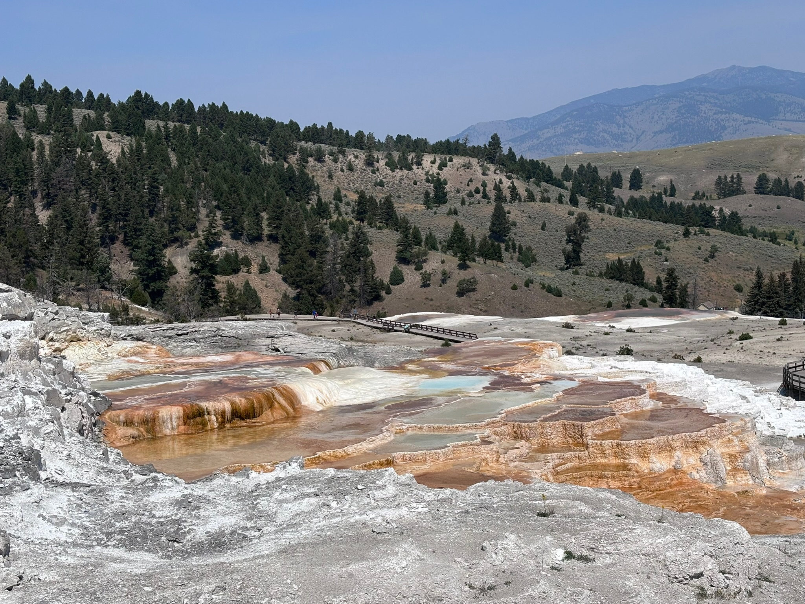

About Mammoth Hot Springs
Day 2 of the Yellowstone trip
Mammoth Hot Springs are a collection of springs heavily saturated with calcium carbonate, the main compound in limestone. This hardens very quickly and, combined with the microorganisms—thermophiles and thermoacidophiles, which mean "heat lovers" and "heat and acid lovers" respectively—that reside upon the surface and often pile up on other microorganisms' remains, they create incredibly intricate patterns and step-like formations. Visible geological change occurs here, sometimes on an hourly basis.
Gallery:
 Pictured here is the side of a terrace, the aforementioned microorganisms causing that side to turn to several different colors. The shape of the formations they reside upon come from ages of travertine and microorganisms piling upon each other. |
 This image shows an instance of recent change in flow. These microorganisms have been deprived of spring water and thus no longer have the means to survive; thus, they will solidify and may once day harbor more of themselves. |
 The first thing that'll catch your eye is that ugly bulbous stone formation. This was at one point a hot spring that hardened over itself and sealed itself closed. Alongside this is a terrace bleached white. This is caused by springs becoming too hot for life. |  This is a spring atop a terrace, with jagged mountains in the background. Here, you can see a variety of yellow microorganism, alongside a travertine shell formed over the surface of multiple springs. Fun fact: the yellow microorganisms here photosynthesize. |
 Here, you can see some of the active change that occurs in these terraces. These trees still remain here, albeit dead, buried beneath travertine and crystalized microorganisms. Heat and acid or silica are common tree-killers in Yellowstone. |
 This terrace-side shows yet more microorganisms, feeding off of the spring water flowing from the spring above. The white patch is water too hot for the microorganisms, flowing down the side of the terrace. There are also some dead, half-buried trees here. |
 This is one of the many very strange formations present within the Mammoth Hot springs; formed by the fast deposition and growth of microorganisms upon themselves, there's a tendancy for flat or bowl-like formations to occur frequently. |
 Jupiter Terrace, from afar. By far the largest and most eye-catching part of the Mammoth Hot Springs, it features its own spring, or several, cascading down several step-like formations. As you can see, the microorganisms on this terrace are thriving. |
 This is a very strange formation that we were able to photograph. Truthfully, I have no idea how this formed, but the microorganisms of Mammoth Hot Springs absolutely had a part in it. |
 Another hot spring, this time with a mountain view. The pictures of them hardly capture their actual scale; these are larger than swimming pools. This spring in particular bears formations that seem to flow, and it shows the surrounding, duller rock. |